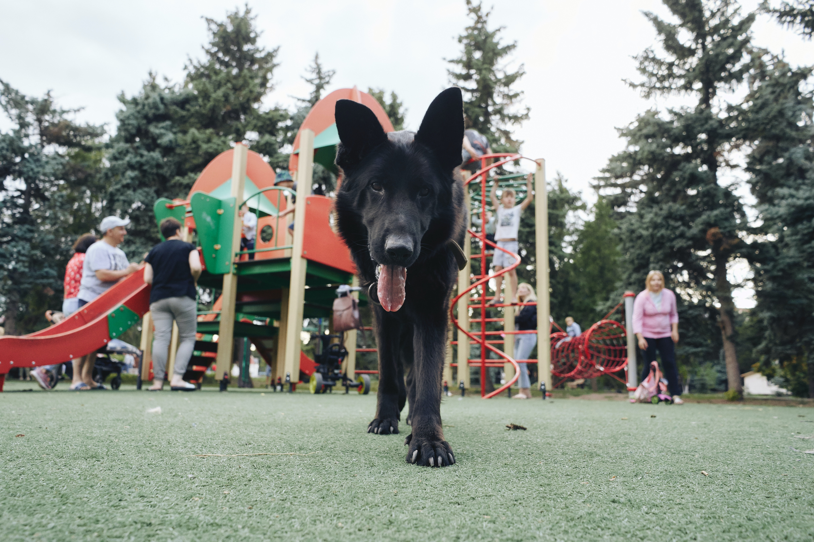
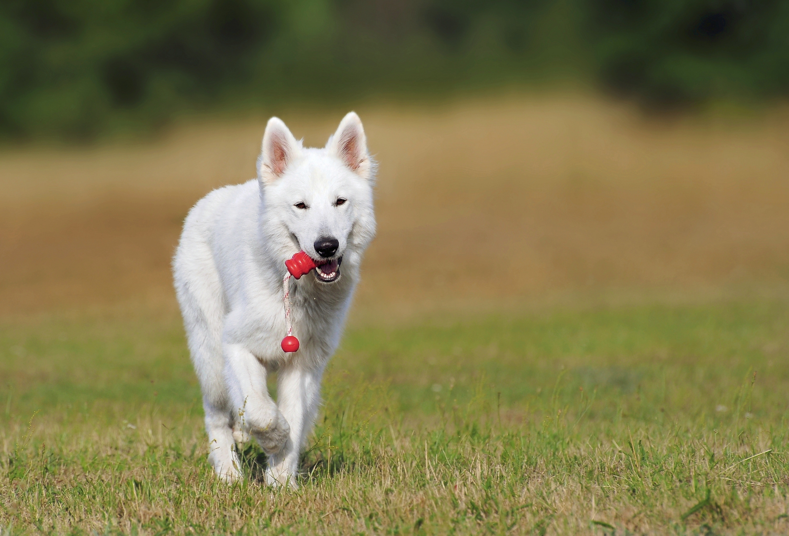

The most common colour types for German Shepherds are
Black, Sable, Black and Tan, Red and Black, and Grey. ( Photo from
vetguru.com.
)
Sable Coat
Chewbarker has a sable coat that is very striking. Sable
German Shepherds typically have dark fur with highlights of grey and tan
showing through.
Black Coat
German Shepherds with black coats are also very striking.


White Coat
White coat german shepherds do not meet the American Kennel Club's
breed standard of a German Shepherd. However, they are still beautiful dogs and still
considered part of the German Shepherd breed.
Website Made By Mitchell Else Athabasca Student I.D: 3545190

 Chewbarker.ca
Chewbarker.ca